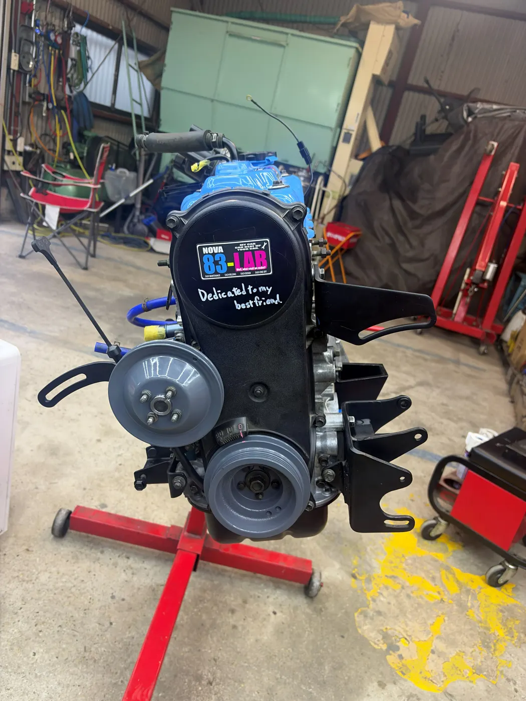

WORK 12
JB31 G13Bエンジン オーバーホール 組付け編
/ 作業事例
整備記録 // JB31 G13B

WORK 05「JB31 G13Bエンジン オーバーホール」の続きです。 分解・洗浄・測定・再塗装まで終えたG13Bに、いよいよ部品を組み付けていきます。
待っていた純正部品が届いたので、まずはピストンをシリンダーブロックに組み込みました。 ピストンとコンロッドは、外したときと同じ気筒に戻します。当たりが出ている位置を変えないためです。
次はシリンダーヘッド。バルブ、スプリング、カムシャフト、ロッカーアームを、IN・EX、気筒ごとに分けておいた部品から元の位置へ組んでいきます。 組み上がったヘッドをブロックに載せ、タイミングベルトを掛けました。タイミングベルトはカムとクランクの回転を合わせる大事な部品で、ずれるとエンジンがかかりません。
オレンジのカムプーリー、ブルーのヘッドカバー、グレーのプーリー。前回塗った部品が並ぶと、一気にエンジンらしい姿になりました。 タイミングベルトカバーには、NOVA_83LABのロゴと「Dedicated to my best friend.」の文字を入れています。 このあとの作業と始動の様子は、また更新します。
- 純正部品の到着・確認
- ピストン・コンロッドをブロックに組み込み
- シリンダーヘッドの組付け（バルブ・カムシャフト・ロッカーアーム）
- ヘッドをブロックに載せる
- タイミングベルトの取り付け
- ヘッドカバー・タイミングベルトカバーの取り付け
Nova_83LAB にご依頼いただいた方へ。よろしければ Googleのクチコミ で感想をお聞かせください。